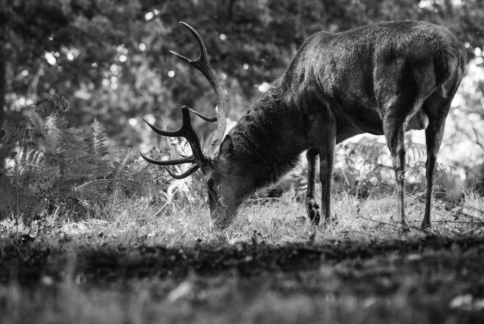
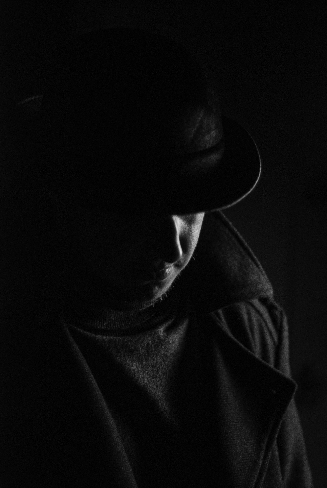
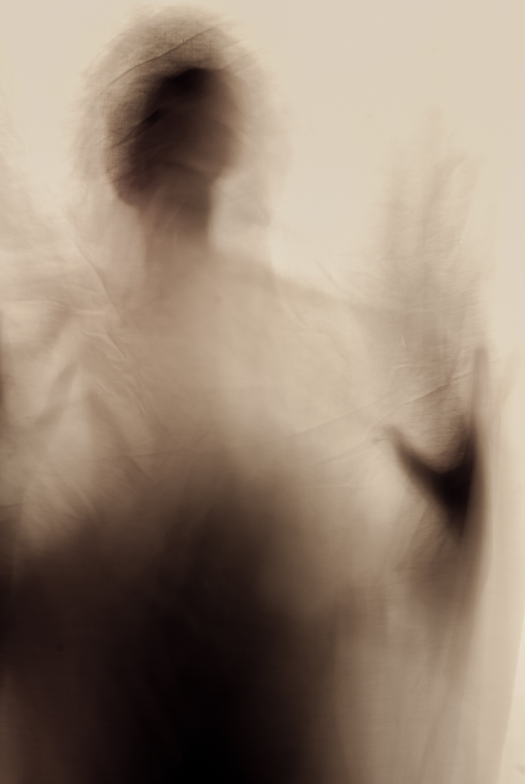
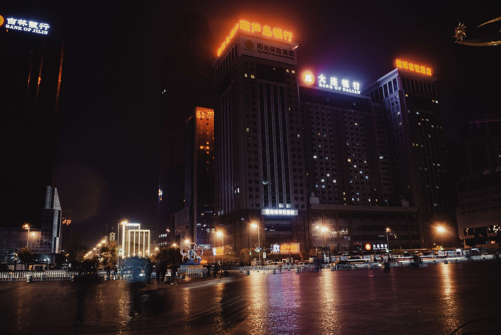

> LEWIS A. JONES
ABOUT
EXPERIENCE
PUBLICATIONS
SOFTWARE
GALLERY
GALLERY
White Sands, USA
Wolf Creek, USA.
Arolla, Switzerland.
Allgäu, Germany.

Richmond Park, UK.

Hull, UK.

Hull, UK.
Hull, UK.
Street food market, Harbin, China.
Shenyang, China.
Harbin, China.